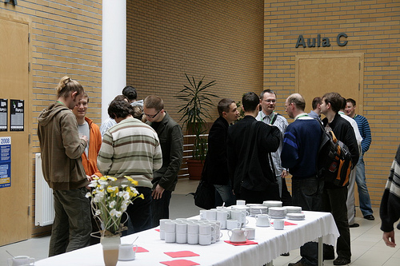
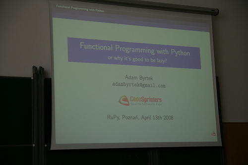

Talks
I missed half of Micheal Foord's talk on "Programming the Browser with IronPython and Silverlight" due to my late arriving. However, the stuff which I saw gave me some nice insights into what IronPython and Silverlight are capable of.
Watching the adoption of Silverlight and development of Moonlight (Silverlight for linux) is quite interesting, especially since Microsoft made a deal to put Silverlight on the official Beijing Olympics website.
 
(Photos taken by ukasbadu, more photos are available on flickr under the rupy2008 tag)
The next talk by Zed Shaw about "Correlations and Conclusions" was really funny but also very informative. He benchmarked Mongrel against web.py and inserted the data into R. R seems like really nice tool for statistical data and once you get used to it's weird syntax there are certainly a lot of things you can do with it.
What I didn't know was that httperf is more superior to ab and used for serious stuff, while ab is mostly okay for quick'n'dirty benchmarks.
The presentation itself was done using latex-beamer and generated out of a YAML file - a quite interesting concept which Zed Shaw is going to describe further in his blog.
Jonathan Hartley, who works together with Micheal Foord at Resolver Systems, held a great talk about Test-driven development and shared his experiences over the past few years. A really interesting fact is the ratio of test code to product, which is 4:1 - meaning that there are four lines of test code for each line of product code.
Business Natural Languages (a Domain Specific Language for empowering subject matter experts) were presented by Jay Fields from ThoughtWorks. The whole point in a BNL is to allow the customer to change the applications behaviour without involving the developer. It's definitely worth a look for some bigger projects.